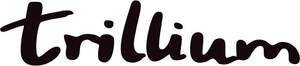

Trade Mark Journal No.2025/025 20 June 2025
UK00004213300 3 June 2025 (8,16,21,25,29,30,32,33,35,41,43)
Mark 1

Mark 2
Mark 3
Mark 4
Mark 5
- Class 8
- Hand tools, utensils and implements (hand operated); cutlery; bar and kitchen utensils; serving utensils; bottle and jar openers (hand operated); can-openers (non-electric); food and fruit mashers (hand implements); knife holders; knives, kitchen knives and knives for chefs; knife sharpening apparatus; mortars and pestles; ice tongs and crushers; pickle and ice cube grabbers; parts, fittings and accessories for all the aforesaid goods.
- Class 16
- Books, magazines, leaflets and pamphlets; stationery; instructional and teaching material; cooking and cookery books; food, drinks, hotel, bar and restaurant guides; cocktail and recipe books and cards; menu cards; napkins, tablecloths and coasters of paper; notepads and writing pads; diaries; newsletters and periodicals; paper place mats; printed publications relating to food and drink; photographs; pens; writing instruments; wine and drinks guides; calendars; bookmarks; gift bags; gift boxes; gift tags; parts and fittings for all the aforesaid goods.
- Class 21
- Household or kitchen utensils and containers; plates; bowls; dishes; crockery; glassware; decanters; glasses, drinking vessels and barware; bottle coolers; champagne buckets; bottle openers; bottle stoppers; bottle stands; wine bottle cradles; corkscrews; bottles; vacuum pumps and stoppers for drinks/wine/beer bottles; bar and beverage-preparation utensils and containers; sieves; funnels for drinks; portable coolers and cooling boxes/jackets/sleeves/devices for food and drink; wine and beer coolers and warmers; serving bowls for snacks; ice buckets for bottles of beer; cork removers; hors d’oeuvre dishes; bottle pourers and ice cube trays; measuring jugs and dispensers for drinks; holders for drinking glasses; beer and drinks mats; holders for drinks cans and bottles; beer can holders and cooling jackets; food and fruit mashers (hand implements); non-drip collars; drip catchers; reusable ice cubes, namely plastic drinks coolers; cool bags; swizzle sticks; decanter stands; decanter cleaning balls and decanter cleaners; cutting boards and chopping boards; wine glasses; brandy snifters; whisky glasses; hip flasks; champagne flutes; shot glasses; beer glasses; schnapps glasses; tumblers; cocktail shakers; cocktail stirrers; cocktail sticks; coasters (tableware); cheeseboards; serving platters; nutcrackers; parts and fittings for all the aforesaid goods.
- Class 25
- Clothing, footwear and headgear; kitchen clothing and clothing for chefs; footwear and headgear for chefs; hats for chefs; trousers for chefs; jackets and aprons for chefs; serving aprons; aprons for bartenders; toques.
- Class 29
- Meat, fish and shellfish; crustacea; sashimi; poultry and game; prepared meals and snack foods consisting wholly or principally of meat, fish, shellfish, crustacea, poultry and game; meat extracts; preserved, dried and cooked fruits, fungi and vegetables; preserved, dried, cooked and processed potatoes; chips; prepared meals and snack foods consisting wholly or principally of potatoes or vegetables; jellies, jams, compotes and marmalades; desserts in this class; cheese; butter; soups; potato crisps; pickles; edible oils, curry oils and fats.
- Class 30
- Coffee; tea; cocoa; sugar; cereals; rice; tapioca; sago; artificial coffee; flour and preparations made from cereals; bruschetta; bread; bread sticks; pastries; cakes; puddings; trifles; pasta; biscuits; tarts; pastry; desserts in this class; confectionery; chocolate; chocolate bars; ice and ices; honey; yeast; baking-powder; mustard; vinegar; sauces; pesto; pasta sauces; chutney; marinades; dressings; condiments; pickled ginger; seasonings; relishes; edible salts; pepper; peppercorns; pepper sauce; mayonnaise; rubs for food; herbs and spices; prepared foods, prepared meals, ingredients and snacks included in this class; pizzas; pies; pasta dishes; sandwiches; sushi; fruit sauces.
- Class 32
- Beers; mineral and aerated waters; non-alcoholic drinks; fruit drinks and fruit juices; syrups for making beverages; shandy, de-alcoholised drinks, non-alcoholic beers and wines; cordials; soft drinks.
- Class 33
- Alcoholic drinks; alcoholic wines; spirits and liqueurs; pre-mixed beverages; bitters; blended whisky; scotch whisky; bourbon whisky; whisky; brandy; ciders; fortified wines; mulled wines; red wines; white wines; sparkling wines; gin; port; prosecco; rum; sake; sangria, schnapps; sherry; tequila; vermouth; vodka; alcopops; alcoholic cocktails.
- Class 35
- Retail services, online retail services and wholesale services connected with the sale of hand tools, utensils and implements (hand operated), cutlery, bar and kitchen utensils, serving utensils, bottle and jar openers (hand operated), can-openers (non-electric), nutcrackers, food and fruit mashers (hand implements), knife holders, knives, kitchen knives and knives for chefs, knife sharpening apparatus, mortars and pestles, ice tongs and crushers, pickle and ice cube grabbers, books, magazines, leaflets and pamphlets, stationery, instructional and teaching material, cooking and cookery books, food, drinks, hotel, bar and restaurant guides, cocktail and recipe books and cards, menu cards, napkins, tablecloths and coasters of paper, notepads and writing pads, diaries, newsletters and periodicals, paper place mats, printed publications relating to food and drink, photographs, pens, writing instruments, wine and drinks guides, calendars, bookmarks, gift bags, gift boxes, gift tags, household or kitchen utensils and containers, plates, bowls, dishes, crockery, glassware, decanters, glasses, drinking vessels and barware, bottle coolers, champagne buckets, bottle openers, bottle stoppers, bottle stands, wine bottle cradles, corkscrews, bottles, vacuum pumps and stoppers for drinks/wine/beer bottles, bar and beverage-preparation utensils and containers, sieves, funnels for drinks, portable coolers and cooling boxes/jackets/sleeves/devices for food and drink, wine and beer coolers and warmers, serving bowls for snacks, ice buckets for bottles of beer, cork removers, hors d’oeuvre dishes, bottle pourers and ice cube trays, measuring jugs and dispensers for drinks, holders for drinking glasses, beer and drinks mats, holders for drinks cans and bottles, beer can holders and cooling jackets, food and fruit mashers (hand implements), non-drip collars, drip catchers, reusable ice cubes, namely plastic drinks coolers, cool bags, swizzle sticks, decanter stands, decanter cleaning balls and decanter cleaners, cutting boards and chopping boards, wine glasses, brandy snifters, whisky glasses, hip flasks, champagne flutes, shot glasses, beer glasses, schnapps glasses, tumblers, cocktail shakers, cocktail stirrers, cocktail sticks, coasters (tableware), cheeseboards, serving platters, clothing, footwear and headgear, kitchen clothing and clothing for chefs, footwear and headgear for chefs, hats for chefs, trousers for chefs, jackets and aprons for chefs, serving aprons, aprons for bartenders, toques, meat, fish and shellfish, crustacea, sushi, sashimi, poultry and game, prepared meals and snack foods consisting wholly or principally of meat, fish, shellfish, crustacea, poultry and game, meat extracts, preserved, dried and cooked fruits, fungi and vegetables, preserved, dried, cooked and processed potatoes, chips, prepared meals and snack foods consisting wholly or principally of potatoes or vegetables, jellies, jams, compotes and marmalades, desserts in this class, cheese, butter, soups, potato crisps, pickles, fruit sauces, edible oils, curry oils and fats, coffee, tea, cocoa, sugar, cereals, rice, tapioca, sago, artificial coffee, flour and preparations made from cereals, bruschetta, bread, bread sticks, pastries, cakes, puddings, trifles, pasta, biscuits, tarts, pastry, desserts in this class, confectionery, chocolate, chocolate bars, ice and ices, honey, yeast, baking-powder, mustard, vinegar, sauces, pesto, pasta sauces, chutney, marinades, dressings, condiments, pickled ginger, seasonings, relishes, edible salts, pepper, peppercorns, pepper sauce, mayonnaise, rubs for food, herbs and spices, pizzas, pies and pasta dishes, sandwiches, beers, mineral and aerated waters, non-alcoholic drinks, fruit drinks and fruit juices, syrups for making beverages, shandy, de-alcoholised drinks, non-alcoholic beers and wines, cordials, soft drinks, alcoholic drinks, alcoholic wines, spirits and liqueurs, pre-mixed beverages, bitters, blended whisky, scotch whisky, bourbon whisky, whisky, brandy, ciders, fortified wines, mulled wines, red wines, white wines, sparkling wines, gin, port, prosecco, rum, sake, sangria, schnapps, sherry, tequila, vermouth, vodka, alcopops, alcoholic cocktails; information, advisory and consultancy services relating to all of the aforesaid.
- Class 41
- Entertainment services; live music; entertainment services relating to food, cookery, drinks, cocktails and bars; education, instruction, tuition and training services; educational services relating to food, cookery, drinks, cocktails and bars; organisation and hosting of cookery and cocktail classes and schools; organisation of events, exhibitions, cultural activities, competitions and stage shows relating to food, cookery, drinks, cocktails and bars; publication of books; providing on-line electronic publications (not downloadable); cocktail making classes; information relating to entertainment, food, cookery, drinks, cocktails, bars or education provided on-line from a computer database or the Internet; club services; entertainment and educational services relating to wine tasting, spirit tasting, fortified wine tasting, sparkling wine tasting, food and hospitality; wine tastings [educational and entertainment services]; organising and conducting workshops, courses and seminars relating to food, drinks and alcoholic drinks; publishing of printed matter relating to food, drinks and alcoholic drinks; information, consultancy and advisory services relating to all of the aforesaid.
- Class 43
- Provision of food and drink; catering services including mobile catering services; restaurant, café, lounge and bar services; wine and cocktail bar services; banqueting services; accommodation, hotel, hostel, bed and breakfast and guesthouse services; hotel and restaurant reservation services; information about restaurants, bars, hotels, menus and drinks provided on-line from a computer database or from the Internet; information, advisory and consultancy services relating to all of the aforesaid.
Trillium Restaurant (Birmingham) Limited
Representative: Forresters IP LLP